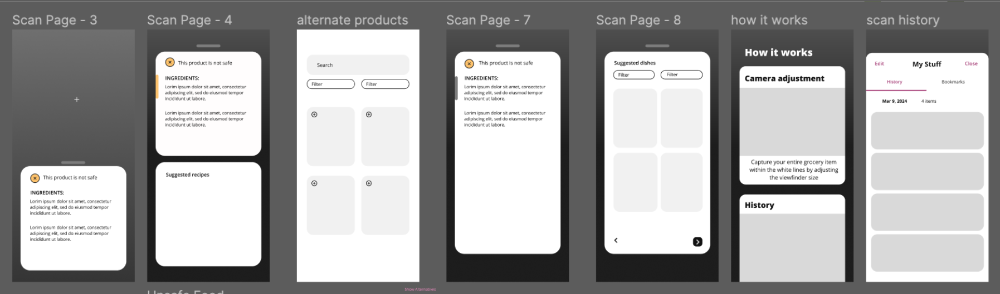
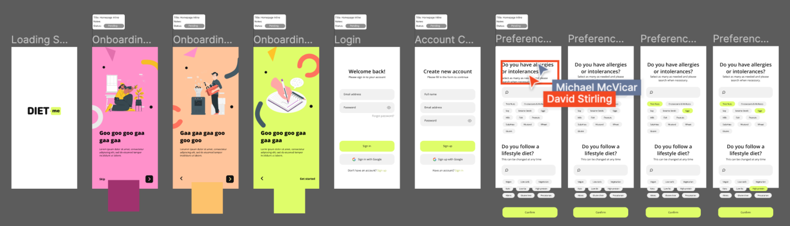

Helping people with allergy and accessibility challenges confidently find their next meal
My Role
Worked in a team of 4, leading branding and interface design.
Problem Statement
How might we create a digital product that helps identify safe foods and dining options, improves communication of dietary needs, and supports a healthy, social lifestyle for people with dietary restrictions?
Key Pain Points
1. Identifying Safe Dining Options
Many restaurants struggle to provide complete ingredient lists and allergen warnings which make eating out a surprisingly risky activity for many with allergies.
2. Frustrations with Grocery Shopping and Cooking
Dietary restirctions will inevitabily lead to scanning thousands of ingredient lists before taking your first bite. Magnifying this discomfort over 20-30 grocery list items will quickly become cumbersome.
3. Communicating Dietary Needs
Despite being so common, explaining your allergies is beyond awkward for many. And as someone who's allergic to tree nuts, explaining the ellergy is my least favourite part of it all.
Competitive Analysis
Competitor solutions are strictly limited to barcode scanning and struggle to provide comprehensive food databases.
After conducting a competitive analysis with competitor apps such as Yuka and Fig, we determined that these two points served as their most glaring weaknesses and thus, our best opprotunities to truly help users.
Although useful in limited quantities, barcode scanning becomes tedious in grocery stores as it requires the user to individually locate the barcode on each boxed item. Similarly, the limited databases of competitors reduce their soliution's overall utility as the app cannot be confidently and consistently used.
Ideation
From UberEats to AI Recipe books and much more, we considered it all!
We discussed building an AI Recipe book that generates recipes based on a user's unique dietary profileand considered designing a web extension to confirm the safety of upcoming purchases. We even discussed creating an UberEats plugin of sorts to filter nearby restaurants by the quality of available food options.
Alhough neither of these ideas werre used in their original form, they each found their way into the design of our solution. For example, our DietMe box-acanning feature is powered by scraping data from online stores such as UberEats, InstaCart, Walmart and more. We then built on this concept by suggesting recipes to users based on their scanning history and their grocery list. Additionally, the grocery list feature improved the utility of the application for a greater variety of users.
Ideation Sprint 1

Ideation Sprint 2

The Solution
1. Users create a one-time dietary profile.
After downloading DietMe, users are prompted to create a dietary profile in which they describe their dietary restrictions and any lifestyle diet plans that they are on. This information is only collected once and is compared against all scanned items and recipes to ensure safety and diet adherence.
2. Users create a grocery list and get recommended recipes.
By tracking groceries through DietMe, the app has a better idea of what foods can be used in a recipe. If you don't know what to make for dinner but are sure you would love a dish with pasta, you can add the one item to your grocery list and watch the recommendations pour in. After deciding which recipe looks the best, you can import the required ingredients into your grocery list.
3. Users scan items in-store to knock them off their list.
By scanning an item on the shelf, users can ensure that it fits their dietary needs and cross it off their list at once. If the item doesn't fit their diet, DietMe will recommend a substitution or a new recipe using the ingredients that are already in their cart.
4. Enabling voice control allows visually impaired users to shop independantly.
Typically, the visually impaired need to grocery shop alongside a truster friend or family member as cardboard boxes and sleek packaging exclusively communicate item names, flavours and ingredients visually. However, as DietMe stores this information in its databases, voice control will enable users to shop without relying on a second party to read items aloud. This feature would need to be paired with haptic feedback for the incorrect scanning of items and would require much more intensive accessibility research to ensure the accessibility of the product.